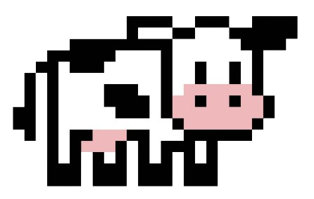
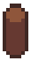

Run Cow Run!
High Score: 0
Current Score:


Press Here to Start
Instructions: Use spacebar or mouseclick to jump over the logs!
High Score: 0
Current Score:
Instructions: Use spacebar or mouseclick to jump over the logs!